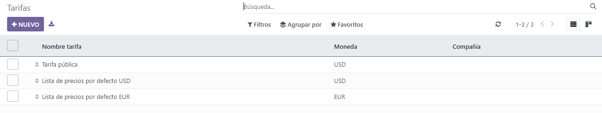

Listas de precios, descuentos y fórmulas¶
Ventas tiene una útil función de lista de precios que se puede personalizar para ajustarse a cualquier estrategia de precios.
Una lista de precios es una lista de precios (o reglas de precios) que Odoo utiliza para determinar el precio apropiado para un cliente. Estas listas de precios se pueden configurar con criterios específicos (como periodos de tiempo, cantidad mínima vendida, entre otros) para aplicar ciertos precios o descuentos.
Las listas de precios sugieren ciertos precios, pero siempre se pueden cambiar en la orden de venta.
Opciones de estrategia de precios¶
Si desea elegir una estrategia de precios, primero vaya a . En la sección Precios, haga clic en la casilla de verificación junto a la función listas de precios.
Al hacer esto verá dos opciones adicionales: Varios precios por producto y Reglas de precio avanzadas (descuentos, fórmulas). También aparecerá un enlace etiquetado como listas de precios, que lleva a una página separada de listas de precios, donde se pueden crear y/o modificar listas de precios.
Varios precios por producto: proporciona la opción de establecer varios precios diferentes por producto.
Reglas de precios avanzadas (descuentos, fórmulas): proporcionan la opción de crear reglas de precios detalladas y aplicar descuentos, márgenes y redondeos.

Una vez que haga clic en la casilla de verificación junto a la función listas de precios, seleccione una de esas dos opciones, no olvide hacer clic en guardar.
Listas de precios¶
Después de activar y guardar la función listas de precios, la página de ajustes se vuelve a cargar, ahí deberá hacer clic en el enlace listas de precios (debajo de la función listas de precios en la página de ajustes), o vaya a .
Cualquiera de las opciones lo llevará a la página de listas de precios, en la cual se pueden crear o modificar las listas de precios en cualquier momento.
Nota
La lista de precios pública es la lista de precios predeterminada utilizada en Ventas y Comercio electrónico.
Desde la página de listas de precios, seleccione la lista de precios deseada para editar o haga clic en nuevo para crear una nueva lista de precios, esto mostrará un formulario de lista de precios en blanco que se puede configurar de varias formas diferentes.

Cuando cree una nueva lista de precios, comience por agregar un nombre para la lista de precios en la parte superior del formulario, en el campo en blanco. Después, seleccione qué divisa se debe utilizar.
Entonces, si trabaja en un entorno de múltiples empresas, seleccione a qué empresa debe aplicarse esa lista de precios en el campo empresa. Si deja este campo en blanco, la lista de precios se aplicará automáticamente a todas las empresas en la base de datos.
Pestaña de reglas de precios¶
La funcionalidad de la pestaña reglas de precios en un formulario de lista de precios varía según la configuración elegida de la lista de precio: ya sea varios precios por producto o reglas de precio avanzadas (descuentos, fórmulas).
Sin embargo, la pestaña reglas por tiempo y la pestaña configuración siempre son las mismas, independientemente de la configuración de la lista de precios elegida.
Pestaña de reglas de precios (varios precios por producto)¶
Si la configuración varios precios por producto está activada, la pestaña reglas de precio en los formularios de la lista de precios proporcionará la opción de agregar productos específicos (con un precio específico) a una lista de precios.
Si desea agregar un producto y precio específico a un formulario de lista de precios, haga clic en la pestaña reglas de precio, luego en agregar línea en la columna productos. Luego, seleccione el producto deseado al cual se debe aplicar un precio específico.
Después, si es necesario, seleccione una variante de producto en la columna variantes (por ejemplo, un tamaño específico del producto, color, etc.). Si no selecciona ninguna variante, este precio se aplicará a todas las variantes del producto.
Si se debe comprar una cantidad mínima de un producto para aplicar un precio específico, ingrese la cantidad en la columna cantidad mínima.
Si desea configurar el precio de un producto en esta lista de precios específica, ingrese la cantidad deseada en la columna precio. También existe la opción de agregar una fecha de inicio y una fecha de finalización al precio del producto configurado.
Si desea agregar otra línea de productos, vuelva a hacer clic en agregar línea y repita el proceso. No hay límite en la cantidad de productos que se pueden agregar en la pestaña reglas de precio de un formulario de una lista de precios.
Si desea obtener más información, consulte la siguiente sección: varios precios por producto.
Pestaña de reglas de precios (reglas de precios avanzadas)¶
Si tiene la configuración de reglas de precios avanzadas (descuentos, fórmulas) activada, la pestaña Reglas de precios en los formularios de la lista de precios proporciona la opción de configurar reglas de precios detalladas basadas en fórmulas.
Consulte la sección reglas de precios avanzadas (descuentos, fórmulas) para obtener instrucciones detalladas sobre cómo agregar reglas de precios avanzadas a una lista de precios.
Pestaña de reglas según el tiempo¶
Las reglas según el tiempo se utilizan específicamente con los productos de suscripción. Asegúrese de consultar la documentación sobre Suscripciones aquí.
En la pestaña reglas según el tiempo, podrá ver la misma función que en la pestaña de reglas de precio, la única diferencia es que se puede aplicar un periodo de tiempo repetido en la columna periodo.
Después de seleccionar un producto y una posible variante en la pestaña reglas según el tiempo, seleccione el campo en blanco en la columna de periodo para ver un menú desplegable de periodos de recurrencia predefinidos (por ejemplo, mensual, trimestral, semanal, etc.).
También puede crear nuevos periodos de recurrencia directamente desde esta columna, solo debe escribir el nuevo nombre para el periodo y luego seleccionar crear para crear el periodo de tiempo (se puede editar más tarde). O seleccione crear y editar… para ver un formulario emergente, en el cual se puede configurar directamente el nuevo periodo de recurrencia.

Desde este formulario añada un nombre, la duración, y una unidad (por ejemplo, días, semanas, etc.). No olvide guardar y cerrar.
Por último, agregue el precio deseado para esta regla por tiempo en la columna Precio.
Ver también
Pestaña de configuración¶
En la pestaña Configuración hay algunas opciones disponibles que le permiten personalizar la lista de precios con mayor exactitud.
Dentro de la pestaña, en la sección Disponibilidad, puede agregar algunos grupos de países a la lista de precios en el campo correspondiente. No hay un límite con respecto al número de grupos de países que puede agregar a este campo.
Nota
Si no establece algún país para un cliente, Odoo toma la primera lista de precios que no tiene un grupo de países.
En la sección Sitio web hay algunas opciones que puede configurar. En caso de que trabaje en un entorno con varios sitios web, puede aplicar la lista de precios a uno específico con el campo Sitio web. Si lo deja vacío, entonces la lista de precios se aplicará a todos los sitios web de la base de datos.
Haga clic en la casilla Seleccionable para que los clientes tengan esta opción disponible y puedan elegirla mientras realizan sus compras. Si no selecciona la casilla Seleccionable, entonces los clientes no podrán seleccionar la lista de precios por su cuenta.
Por último, también está la opción de agregar un Código promocional de comercio electrónico. Para agregar uno, escriba el código promocional deseado para que se aplique la lista de precios al cliente al momento de ingresarlo en el proceso de pago. En este caso, la lista de precios aplicará incluso si el cliente no cumple con los criterios que se habían establecido con anterioridad.
Mostrar el porcentaje de descuento a los clientes¶
La opción para mostrar el precio al público y el porcentaje de descuento calculado en el catálogo de productos está disponible en la aplicación Ventas de Odoo.
Para esto, vaya a la aplicación y, en la sección Precios, haga clic en la casilla que se encuentra junto a la función Descuentos. Luego, haga clic en el botón correspondiente para guardar todos los cambios.
Después de habilitar la función de descuentos, vaya a la página de las listas de precios. Para esto, puede hacer clic en el enlace a las listas de precios que se encuentra en la página de ajustes o si va a la aplicación .
En la página de listas de precios seleccione la lista que desea editar. En el formulario correspondiente, haga clic en la pestaña Configuración. Allí, en la parte inferior, ahora está disponible la sección de descuentos.

Las opciones disponibles en esta sección son las siguientes:
Descuento incluido en el precio: esta opción muestra al cliente solo el precio final con el descuento ya incluido.
Mostrar el precio al público y el descuento al cliente: esta opción muestra al cliente el precio público y el descuento que está obteniendo.
Listas de precios aplicadas a los clientes¶
Aunque la lista de precios predeterminada que se aplica a cualquier cliente es la lista de precios pública, Odoo ofrece la oportunidad de aplicar directamente una lista de precios distinta a los clientes desde su formulario de contacto.
Para esto, abra el formulario de contacto del cliente. Hay dos formas de hacerlo, puede ir a la aplicación y luego seleccionar uno en la página Clientes o puede hacer clic en el nombre de un cliente desde una orden de ventas.
En el formulario de contacto del cliente abra la pestaña Ventas y compra y en la sección Ventas, establezca la lista de precios que debe aplicarse a este cliente en específico desde el menú desplegable en el campo Lista de precios.

Múltiples precios por producto¶
Para aplicar varios precios por producto, seleccione la opción Varios precios por producto después de habilitar la función Listas de precios en la página de ajustes de la aplicación Ventas (aplicación ) y haga clic en guardar.
A continuación, aplique listas de precios a productos específicos mediante el formulario de productos. Vaya a la aplicación y seleccione el producto al que desea aplicar varios precios. Al seleccionar un producto desde la página de Productos, se abre el formulario específico del producto en una página separada.
Haga clic en el botón inteligente Precios adicionales del formulario de producto, este se encuentra en la parte superior.
La acción anterior abre una página separada que muestra las Reglas de precio específicas para ese producto en particular. Aquí puede editar o crear reglas de precio en cualquier momento.
Para crear una nueva regla de precios para un producto desde esta página de reglas de precios en específico, haga clic en Nuevo para agregar una fila personalizable que ya incluya el producto deseado en la columna Aplicado en.
Después, con el menú desplegable de la columna Lista de precios, seleccione a qué lista de precios debe aplicarse esta regla de precios específica del producto.
Nota
La lista de precios pública es la lista de precios predeterminada utilizada en Ventas y Comercio electrónico.
Truco
Para crear una nueva lista de precios desde esta página, escriba el nombre que desea proporcionarle en la columna Lista de precios y luego seleccione crear desde el menú desplegable. Puede modificar las listas de precios en cualquier momento desde la aplicación , también puede crear listas de precios desde esa página.
Después de agregar la lista de precios deseada a la fila, establezca una cantidad mínima para la regla de precios.
Example
Si la columna Cantidad mínima está configurada en 2, el nuevo precio en la columna Precio se aplicará a las órdenes con 2 o más productos. Así que, en teoría, si un solo producto cuesta $100, puede alentar a los clientes a comprar más, si el Precio está establecido en $85 por producto para una cantidad mínima de 2 productos.
Después ingrese la cantidad deseada en la columna Precio. Si es necesario, proporcione una fecha de inicio y una fecha de finalización para la regla de precio del producto.
Por último, si trabaja en un entorno multiempresas, seleccione a qué empresa se debe aplicar esta regla de precios en el campo Empresa. Si deja este campo vacío, la regla de precios se aplicará a todas las empresas de la base de datos.
Haga clic fuera de la fila para activar la capacidad de autoguardado de Odoo, esto quiere decir que ya puede utilizar la regla de precio que acaba de crear.
Proceda a agregar tantas reglas de precio únicas por producto como desee, no hay un número máximo de cantidad de reglas de precio que puede agregar por producto.
Con las reglas de precio configuradas para un producto específico, los clientes que pertenecen a esas listas de precios verán los nuevos precios aplicados en automático. La cantidad de reglas de precio aplicadas a un producto en particular también aparece en el botón inteligente Precios adicionales que está ubicado en cada formulario de producto.
Nota
Cuando se agrega una regla de precios o una lista de precios a un producto a través del botón inteligente de Precios adicionales, también se ve reflejado en la lista de precios. De manera similar, cuando una regla de precio para un producto en específico se agrega a una lista de precios, también se ve reflejado en el formulario del producto a través del botón inteligente de Precios adicionales.
Reglas de precios avanzadas¶
Las función de lista de precios de Reglas avanzadas de precios (descuentos, fórmulas) proporciona la opción de establecer el cambio de precio según los descuentos y las fórmulas. Estos cambios pueden ser relativos al precio de la lista/catálogo de productos, el costo del producto u otra lista de precios.
Para usar las reglas avanzadas de precios, con los descuentos y las fórmulas, seleccione la opción Reglas avanzadas de precios (descuentos, fórmulas) después de activar la función de Listas de precios en la página de ajustes de la aplicación Ventas () y haga clic en Guardar.
Después de activar y guardar la función Listas de precios, la página de Ajustes se vuelve a cargar y desde ahí, seleccione el enlace de Listas de precios (debajo de la función Listas de precios en la página de Ajustes) o vaya a .
Cualquiera de las opciones lo llevará a la página de listas de precios, en la cual se pueden crear o modificar las listas de precios en cualquier momento.
Desde la página de Precios, seleccione la lista de precios que desea modificar o cree una nueva lista con el botón Nuevo.
En el formulario de la lista de precios, en la pestaña Reglas de precio, haga clic en Agregar una línea para agregar una regla de precio avanzada. Al hacerlo, aparecerá una ventana emergente para Crear reglas para las listas de precio en donde se configuran las reglas avanzadas.

Cálculo de precios¶
En este formulario, seleccione una de las tres opciones de Cálculo:
Precio fijo: el cálculo del precio se basa en un precio fijo.
Descuento: el cálculo del precio se basa en un descuento.
Fórmula: el cálculo del precio se basa en una fórmula.
Nota
Cada opción de cálculo muestra sus propios campos específicos de cálculo en el formulario.
Si selecciona el Precio fijo, escriba el precio que desea en el campo Precio fijo de abajo. Si selecciona Descuento, escriba el porcentaje que desea para el descuento en el campo de Descuento que aparece.
Si selecciona Fórmula, aparecerán varias opciones que podrá configurar.

Para configurar la opción de cálculo con Fórmula, seleccione una opción del campo Con base en: Precio de venta, Costo u Otra lista de precios. Esto determinará en qué regla de precios avanzada se basará.
Luego, en el campo Descuento, determine cuál será el descuento que aplicará. Tenga en cuenta que puede aplicar un incremento en el precio si configura un descuento negativo en este campo.
Example
Para determinar un incremento del 100% (o 2 veces el costo del producto) con un margen mínimo de $5, establezca el campo Con base en en Costo, el Descuento en -100 y el Margen en 5. Esto generalmente se usa para las ventas al menudeo.

Después, en el campo Tarifa adicional, especifique una cantidad fija para agregarla (o restarla) a la cantidad calculada con el descuento. Luego, escriba la cifra que desee en el campo Método de redondeo. Este método establece el precio como un múltiplo del valor en el campo.
Nota
El redondeo se aplica después del descuento y antes del cargo adicional.
Truco
Para que el precio final sea 9.99, configure el Método de redondeo a 10 y la Tarifa adicional en -0.01.
Por último, especifique la cantidad mínima del margen sobre el precio base en el campo Márgenes.
Una vez que la configuración de las fórmulas esté lista, Odoo proporciona un ejemplo de la fórmula en el recuadro azul del lado derecho de la página.
Example
Para aplicar descuentos del 20% con precios redondeados a 9.99, configure el campo Con base en en Precio de ventas, el campo Descuento en 20, el campo Tarifa adicional en -0.01 y el campo Método de redondeo en 10.
Condiciones¶
En la parte inferior de la ventana emergente de Crear reglas de listas de precio se encuentra la sección de Condiciones.
Aquí, seleccione una de las opciones del campo Aplicar en:
Todos los productos: la regla de precios avanzada que se aplicará a todos los productos.
Categoría del producto: la regla de precios avanzada que se aplicará a una categoría específica de productos.
Producto: la regla de precios avanzada que se aplicará a un producto específico.
Variante de producto: la regla de precio avanzada que se aplicará a una variante de producto específica.
Si selecciona cualquiera de estas opciones, a excepción de Todos los porductos, aparecerá un nuevo campo de opción específico, en dónde deberá elegir la Categoría de producto, Producto, o Variante de producto específicos.
Luego, seleccione una cantidad mínima a la que se aplicará la regla de precios avanzada en el campo Cantidad min.. Por último, seleccione un rango de fechas para la validez de la lista de precio del artículo en el campo Validez.
Una vez completa la configuración, haga clic en Guardar y cerrar para guardar la regla de precios avanzada, o haga clic en Guardar y nuevo para crear de inmediato otra regla de precios avanzada en un nuevo formulario.
Nota
Si establece una regla de precios para un producto en particular y otra para su categoría de producto, Odoo toma en cuenta la regla del producto.
Ver también